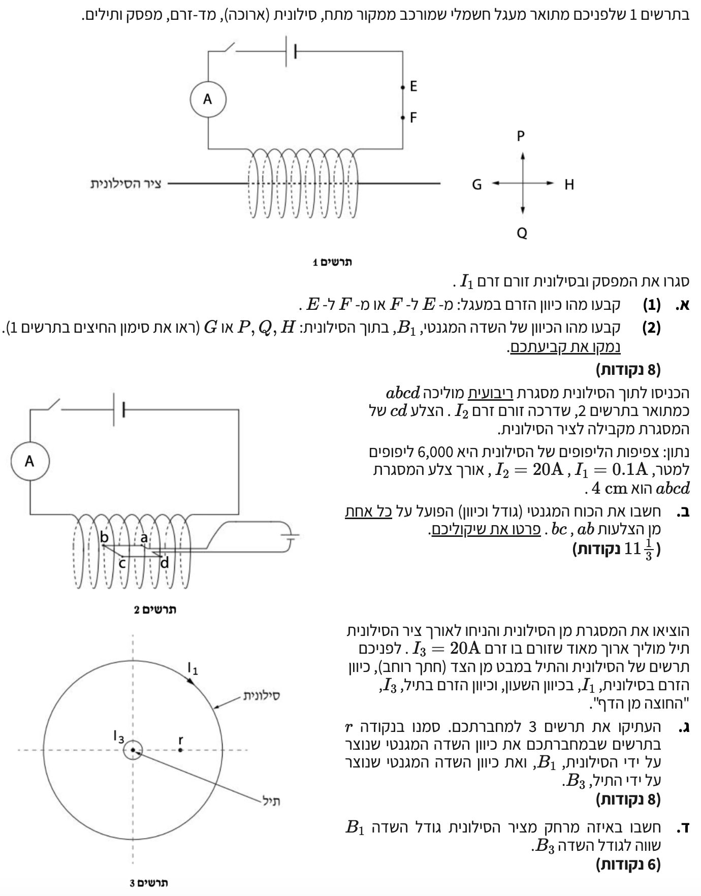

פתרון מודרך הכולל שדות מגנטיים בסילונית וכוחות אלקטרומגנטיים.
שאלה זו בוחנת את הבנתנו לגבי יצירת שדה מגנטי על ידי סילונית ותיל ישר, וכן את הכוחות המגנטיים הפועלים על תילים נושאי זרם הנמצאים בתוך שדה זה.
השאלה משלבת שימוש בכלל יד ימין למציאת כיווני זרם, שדה וכוח, ומצריכה חישובים המתבססים על סופרפוזיציה של שדות מגנטיים.
בואו נפרק את השאלה צעד-אחר-צעד, תוך הקפדה על המרות יחידות ושימוש מדויק בנוסחאות מדף הנוסחאות.

על פי מוסכמות זרימת הזרם החשמלי, במעגל חיצוני (מחוץ למקור המתח), הזרם החשמלי זורם תמיד מההדק החיובי של מקור המתח אל ההדק השלילי שלו.
נזהה את קטבי הסוללה בתרשים 1. הקו הארוך מסמל את ההדק החיובי (+), והקו הקצר והעבה מסמל את ההדק השלילי (-). לפי השרטוט, ההדק החיובי נמצא בצד שמאל.
נעקוב אחר מסלול הזרם היוצא מההדק החיובי. הזרם זורם שמאלה, עובר דרך המפסק ומד-הזרם, ונכנס לסילונית מצידה השמאלי. לאחר שהוא עובר דרך כל כריכות הסילונית, הוא יוצא מצידה הימני ומטפס במעלה התיל חזרה אל ההדק השלילי של הסוללה (הצד הימני של הסוללה).
כשהזרם עולה מהסילונית חזרה לסוללה בחלקו הימני של המעגל, הוא נתקל קודם בנקודה F ולאחר מכן בנקודה E הנמצאת מעליה. לכן, הזרם מטפס מ-F ל-E.
מסקנה: כיוון הזרם בקטע שבין E ל- F הוא מ- F ל- E.
נשתמש בכלל יד ימין לסילונית: אם עוטפים את הסילונית בארבע אצבעות יד ימין כך שהן מצביעות בכיוון הזרם בכריכות, האגודל יורה על כיוון השדה המגנטי בתוך הסילונית.
נבחן היטב את תרשים 1. כפי שראינו בסעיף הקודם, הזרם נכנס לסילונית מצד שמאל. התיל המגיע משמאל עובר לחלק הקדמי (הנראה לעין) של הסילונית ומשם יורד כלפי מטה, ואז עולה בחלק האחורי (המוסתר). משמעות הדבר היא שבחזית הסילונית (הצד הקרוב אלינו), הזרם זורם כלפי מטה.
כעת נפעיל את כלל יד ימין. נמקם את כף יד ימין כך שהאצבעות מתעגלות סביב הסילונית ויורדות כלפי מטה בחזית (כיוון הזרם). במנח זה, האגודל שלנו מצביע ימינה.
נבדוק במערכת הצירים הנתונה: הכיוון הימני מסומן באות H.
מסקנה: כיוון השדה המגנטי \( B_1 \) בתוך הסילונית הוא בכיוון החץ H (ימינה).
נחשב את גודל השדה המגנטי בתוך הסילונית הארוכה (\( B_1 \)). אנו משתמשים בנוסחה \( B_1 = \mu_0 n I_1 \) (המתקבלת מהנוסחה שבדף כיוון ש- \( n = N/L \) מייצג את צפיפות הליפופים למטר).
כפי שמצאנו בסעיף א', כיוון השדה הוא שמאלה וקווי השדה מקבילים לציר הסילונית.
הצלעות ab ו- cd מקבילות לציר הסילונית. המשמעות היא שהן מקבילות לקווי השדה המגנטי \( B_1 \). הזווית \( \alpha \) בין כיוון הזרם בצלעות אלו לכיוון השדה היא \( 0^{\circ} \) או \( 180^{\circ} \).
מכיוון ש- \( \sin(0^{\circ}) = \sin(180^{\circ}) = 0 \), הכוח המגנטי הפועל עליהן מתאפס.
הצלע bc נמצאת במישור המאונך לציר הסילונית, לכן היא מאונכת לקווי השדה המגנטי. במקרה זה, הזווית \( \alpha = 90^{\circ} \) ו- \( \sin(90^{\circ}) = 1 \).
נחשב את גודל הכוח \( F_{bc} \):
למציאת כיוון הכוח, נפעיל את כלל יד ימין לכוח על תיל. ראשית, נבין את כיוון הזרם \( I_2 \). לפי תרשים 2, ההדק החיובי של מקור המתח של המסגרת נמצא בצד ימין, לכן הזרם נכנס למסגרת בנקודה d. המסלול יהיה d → c → b → a. בצלע bc הזרם זורם מ-c ל-b, כלומר כלפי מעלה.
כעת נשתמש בכלל: אצבעות מורות על כיוון הזרם (מעלה), כף היד מופנית כך שהשדה נכנס אליה (כלומר, מפנים את גב כף היד ימינה כדי לקלוט את קווי השדה הבאים משמאל לימין, או אצבע המורה למעלה ואמה ימינה). האגודל הפרוש יפנה פנימה לתוך הדף.
אנו משתמשים בשני יישומים של כלל יד ימין:
שדה הסילונית (\( B_1 \)): בתרשים 3 נתון שזרם הסילונית \( I_1 \) זורם עם כיוון השעון. נפעיל את כלל יד ימין - נסובב את האצבעות עם כיוון השעון. האגודל יצביע לתוך הדף. מכיוון שהשדה בתוך סילונית הוא אחיד, כיוונו בנקודה \( r \) (ובכל נקודה פנימית אחרת) הוא לתוך הדף. המוסכמה לכיוון זה היא סימון של "X".
שדה התיל הישר (\( B_3 \)): התיל במרכז נושא זרם \( I_3 \) החוצה מן הדף. נציב את אגודל יד ימין הפונה אלינו (החוצה מהמסך/דף). האצבעות מסתובבות נגד כיוון השעון. בנקודה \( r \), הנמצאת מימין למרכז, המשיק למעגל השדה המסתובב נגד כיוון השעון מצביע כלפי מעלה. לכן, וקטור השדה \( B_3 \) יכוון מעלה.
מסקנה: וקטור השדה \( B_1 \) מסומן כסימן "X" המעיד על כיוון לתוך הדף, ווקטור השדה \( B_3 \) הוא חץ המצביע מעלה במישור הדף.
נבנה את המשוואה הדורשת שוויון בגודל השדות, ונציב את הביטויים של כל שדה. זו גישה אלגברית עדיפה מאשר חישוב ערכי ביניים מורכבים.
נבחין שקבוע הפרמיאביליות, \( \mu_0 \), מופיע בשני האגפים. נחלק ב- \( \mu_0 \) ונצמצם אותו מהמשוואה:
נבודד אלגברית את הנעלם שלנו, המרחק \( R \). נכפול ב- \( R \) ונחלק באגף השמאלי (\( n \cdot I_1 \)):
כעת נציב את הנתונים המספריים (\( I_3 = 20 \), \( n = 6000 \), \( I_1 = 0.1 \)):
נחשב את הערך העשרוני ונכתוב תשובה עם 3 ספרות מהותיות:
מסקנה: המרחק מציר הסילונית בו השדות שווים בגודלם הוא \( 5.31 \times 10^{-3} \, \text{m} \) (או \( 5.31 \, \text{mm} \)).